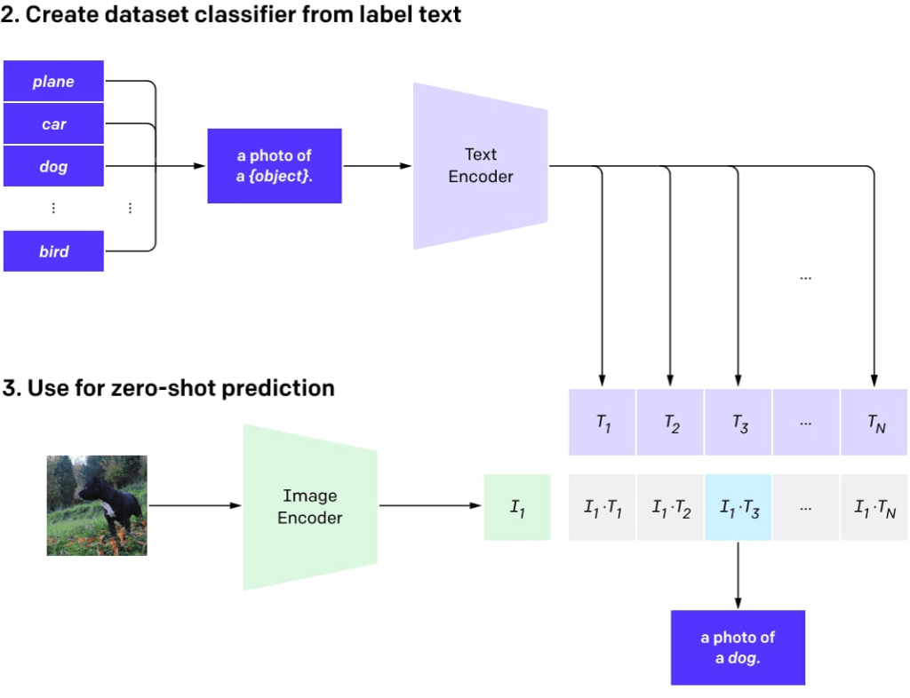
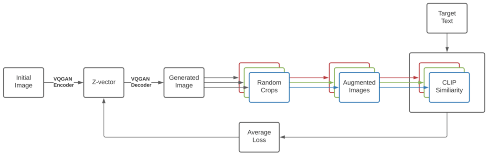

DALL·E 2
Contents
DALL·E 2#

CLIP#
Blog post: https://openai.com/blog/clip/
Code: https://github.com/openai/CLIP (does not cover the training part)
Models: Available (on Apr 22, 2022, the last and the best ViT-L/14@336px model was published)
Alternative code: https://github.com/mlfoundations/open_clip (with training)
Alternative models (Multilingual): https://github.com/FreddeFrallan/Multilingual-CLIP
CLIP was originally a separate auxiliary model to rank the results from DALL·E.
An abbreviation for Contrastive Language-Image Pre-Training.
Take a large dataset of image-text pairs scraped from the Internet (400M such pairs).
Then train a contrastive model on such a dataset.
Contrastive models produce high scores (similarity) for an image and a text from the same pair (so they are similar) and a low score for mismatched texts and images.
CLIP: technical details#
The model consists of two encoders: one for a text and another one for an image.
Encoders produce embeddings (a multidimensional vector representation of an object, say 512 bytes for each).
Then a dot product is calculated with two embeddings, and it results in a similarity score.
Embeddings are normalized, so this procedure outputs cosine similarity.
It is close to 1 for vectors pointing in the same direction (and consequently a small angle between them), 0 for orthogonal vectors, and -1 for opposite ones.
The model is trained to maximize the similarity score for the image-text pairs from the same dataset and minimize it for mismatched pairs.
Contrastive pre-training#

CLIP image encoders#
There are nine image encoders, five convolutional, and four transformer ones.
Convolutional encoders are ResNet-50, ResNet-101 and EfficientNet-like models called RN50x4, RN50x16, RN50x64 (the higher numbers, the better the model).
Transformer encoders are Vision Transformers (or ViT): ViT-B/32, ViT-B/16, ViT-L/14, and ViT-L/14@336.
The last one was fine-tuned on images with a resolution of 336×336 pixels, and others were trained on 224×224 pixels.
CLIP text encoders#
The text encoder is an ordinary transformer encoder but with masked attention.
It consists of 12 layers with 8 attention heads each, with 63M parameters in total.
The attention span is only 76 tokens (compared to the GPT-3 with 2048 tokens and a standard BERT with 512 tokens).
The text part of the model is suitable for pretty short texts only, and you can’t put a large paragraph into the model.
As DALL·E 2 uses mostly the same CLIP, it should have the same limitation.
CLIP applications#
You can use such a model for ranking text-image pairs as was done in DALL·E to score multiple results and choose the best one.
You can use the CLIP features to train your custom classifiers on top of it.
You can use CLIP for zero-shot classification (when you didn’t specifically train the model to work with these classes) with any number of classes. The classes can be adjustable without retraining a model.
Zero-shot classification with CLIP#

CLIP prompt engineering: CLIPDraw#
CLIPDraw generation procedure

CLIP prompt engineering: VQGAN-CLIP#

VQGAN-CLIP generation procedure

GLIDE#
Blog post: Strangely enough, OpenAI didn’t make a post on it
Models: Available, but only a small model (300M instead of 3.5B parameters) trained on a filtered dataset
GLIDE, which stands for
GuidedLanguage toImageDiffusion for Generation andEditing, is a text-guided image generation model by OpenAI.GLIDE generates images with a 256×256 pixel resolution.
GLIDE model with 3.5B parameters (but it seems the correct number is 5B parameters as there is a separate upsampling model with 1.5B parameters) is favored over 12B parameters DALL·E by human evaluators and also has beaten DALL·E by FID score.
GLIDE models can also be fine-tuned to perform image inpainting, enabling powerful text-driven image editing.
GLIDE Examples#

Text-conditional image inpainting#

Diffusion model#
GLIDE resembles another kind of model called the diffusion model.
Diffusion models add random noise to input data through the chain of diffusion steps, and then they learn to reverse the diffusion process to construct images from the noise.
Illustration of the process used to generate a new image with the diffusion model

Diffusion models compared to the other classes of generative models

GLIDE technical details#
First, the authors trained a 3.5B parameter diffusion model that uses a text encoder to condition on natural language descriptions.
Next, they compared two techniques for guiding diffusion models toward text prompts: CLIP guidance and classifier-free guidance.
Classifier guidance allows diffusion models to condition on a classifier’s labels, and gradients from the classifier are used to guide the sample towards the label.
The classifier-free guidance does not require a separate classifier model to be trained. is a form of guidance that interpolates between predictions from a diffusion model with and without labels.
Classifier-free guidance has two appealing properties
First, it allows a single model to leverage its own knowledge during guidance, rather than relying on the knowledge of a separate (and sometimes smaller) classification model.
Second, it simplifies guidance when conditioning on information that is difficult to predict with a classifier (such as text).
With CLIP guidance the classifier is replaced with a CLIP model. It uses the gradient of the dot product of the image and caption encodings with respect to the image.
The text-conditioned diffusion model is an augmented ADM model architecture that predicts an image for the next diffusion step based on a noised image xₜ and corresponding text caption c.
GLIDE technical details: visual part
The visual part is a modified U-Net architecture.
The U-Net model uses a stack of residual layers and down-sampling convolutions, followed by a stack of residual layers with up-sampling convolutions, with skip connections connecting the layers with the same spatial size.
There are different modifications to the original U-Net architecture regarding width, depth, and so on.
Global attention layers with several attention heads are added at the 8×8, 16×16, and 32×32 resolutions.
Also, a projection of the timestep embedding was added to each residual block..
For the classifier guidance, a classifier architecture is the down-sampling trunk of the U-Net model with an attention pool at the 8×8 layer to produce the final output.
The original U-Net architecture

GLIDE technical details: text part
The text is encoded into a sequence of K (the maximum attention span is unclear) tokens that passed through a transformer model.
The output of this transformer is used in two ways:
first, the final token embedding is used in place of a class embedding in the ADM model;
second,the last layer of token embeddings (a sequence of K feature vectors) is separately projected to the dimensionality of each attention layer throughout the ADM model and then concatenated to the attention context at each layer.
The text transformer has 24 residual blocks of width 2048, resulting in roughly 1.2B parameters.
The visual part of the model trained for 64×64 resolution consists of 2.3B parameters.
In addition to the 3.5B parameters text-conditional diffusion model, the authors trained another 1.5B parameters text-conditional upsampling diffusion model to increase the resolution to 256×256 (this idea will be used in DALL·E as well).
The upsampling model is conditioned on text in the same way as the base model but uses a smaller text encoder with a width of 1024 instead of 2048.
For CLIP guidance, they also trained a noised 64×64 ViT-L CLIP model.
GLIDE was trained on the same dataset as DALL·E and the total training compute is roughly equal to that used to train DALL·E.
GLIDE is preferred by the human evaluators
GLIDE finetuning#
The model was fine-tuned to support unconditional image generation.
This training procedure is exactly like pre-training, except 20% of text token sequences are replaced with the empty sequence.
This way, the model retained its ability to generate text-conditional outputs, but can also generate images unconditionally.
The model was also explicitly fine-tuned to perform inpainting. During fine-tuning, random regions of training examples are erased, and the remaining portions are fed into the model along with a mask channel as additional conditioning information.
GLIDE can be used iteratively to produce a complex scene using a zero-shot generation followed by a series of inpainting edits.
First, an image for the prompt “a cozy living room” is generated, then the shown inpainting masks are used and follow-up text prompts added a painting to the wall, a coffee table, and a vase of flowers on the coffee table, and finally to move the wall up to the couch.

DALL·E 2/unCLIP#
Blog post: https://openai.com/dall-e-2/
Code: Not available
Models: Not available
Code (unofficial): https://github.com/lucidrains/DALLE2-pytorch
DALL·E 1 vs. DALL·E 2

OpenAI announced its DALL·E 2 system on April 6th, 2022.
The DALL·E 2 system significantly improves results over the original DALL·E.
It generates images with 4x greater resolution (compared to original DALL·E and GLIDE), now up to 1024×1024 pixels.
The model behind the DALL·E 2 system is called unCLIP.
The authors found that humans still slightly prefer GLIDE to unCLIP in terms of photorealism, but the gap is very small.
Even with similar photorealism, unCLIP is strongly preferred over GLIDE in terms of diversity, highlighting one of its benefits.
DALL·E 2 can combine concepts, attributes, and styles:

Image editing based on text guidance

Generating variations of an image

Some problems with DALL·E 2
unCLIP also struggles at producing coherent text

Producing details in complex scenes:

DALL·E 2 technical details#
It is a clever combination of CLIP and GLIDE, and the model itself (the full text-conditional image generation stack) is called unCLIP internally in the paper since it generates images by inverting the CLIP image encoder.
The CLIP model is trained separately.
Then the CLIP text encoder generates an embedding for the input text (caption).
Then a special prior model generates an image embedding based on the text embedding.
Then a diffusion decoder generates an image based on the image embedding.
The decoder essentially inverts image embeddings back into images.
A high-level overview of DALL·E 2

DALL·E 2 technical details: encoders#
The CLIP model uses a ViT-H/16 image encoder that consumes 256×256 resolution images and has a width of 1280 with 32 Transformer blocks (it’s deeper than the largest ViT-L from the original CLIP work).
The text encoder is a Transformer with a causal attention mask, with a width of 1024 and 24 Transformer blocks (the original CLIP model had 12 transformer blocks).
DALL·E 2 technical details: decoders#
The diffusion decoder is a modified GLIDE with 3.5B parameters.
CLIP image embeddings are projected and added to the existing timestep embedding.
CLIP embeddings are also projected into four extra tokens of context that are concatenated to the sequence of outputs from the GLIDE text encoder.
The original GLIDE’s text conditioning pathway is retained because it could allow the diffusion model to learn aspects of natural language that CLIP fails to capture (yet, it helped little).
During training, the CLIP embeddings are randomly set to zero 10% of the time, and the text caption was randomly dropped 50% of the time.
The decoder generates a 64×64 pixel image, and then two upsampling diffusion models subsequently generate 256×256 and 1024×1024 images, the former with 700M parameters, and the latter with 300M parameters.
To improve upsampling robustness, the conditioning images are slightly corrupted during training.
For the first upsampling stage, gaussian blur was used, and for the second, a more diverse BSR degradation is used, which includes JPEG compression artifacts, camera sensor noise, bilinear and bicubic interpolations, Gaussian noise.
The models are trained on random crops of images that are one-fourth the target size. Text conditioning is not used for the upsampling models.
DALL·E 2 technical details: the prior#
The prior produces image embeddings from text descriptions. (Autoregressive (AR) prior and Diffusion prior with 1B parameters)
In the AR prior, the CLIP image embedding is converted into a sequence of discrete codes and predicted autoregressively conditioned on the caption.
In the diffusion prior the continuous embedding vector is directly modeled using a Gaussian diffusion model conditioned on the caption.
In addition to the caption, the prior model can be conditioned on the CLIP text embedding since it is a deterministic function of the caption.
To improve sample quality, the authors also enabled sampling using classifier-free guidance for both the AR and diffusion prior by randomly dropping this text conditioning information 10% of the time during training.
AR prior
For the AR prior, the dimensionality of the CLIP image embeddings was reduced by Principal Component Analysis (PCA).
319 principal components out of 1024 keep more than 99% information.
Each dimension is quantized into 1024 buckets.
Authors condition the AR prior on the text caption and the CLIP text embedding by encoding them as a prefix to the sequence.
Additionally, they prepend a token indicating the (quantized) dot product between the text embedding and image embedding.
This allowed conditioning of the model on a higher dot product since higher text-image dot products correspond to captions that better describe the image.
The dot product was sampled from the top half of the distribution.
The resulting sequence is predicted using a Transformer model with a causal attention mask.
Diffusion prior
For the diffusion prior, a decoder-only Transformer with a causal attention mask is trained on a sequence consisting of:
the encoded text
the CLIP text embedding
an embedding for the diffusion timestep
the noised CLIP image embedding
a final embedding whose output from the Transformer is used to predict the unnoised CLIP image embedding.
A dot product was not used to condition the diffusion prior.
Instead, to improve quality during sampling time, two samples of an image embedding were generated, and the one with a higher dot product with a text embedding was selected.
Diffusion prior outperforms the AR prior for comparable model size and reduced training compute. The diffusion prior also performs better than the AR prior in pairwise comparisons against GLIDE.
AR vs Diffusion prior
Using different conditioning signals

DALL·E 2 technical details: training#
When training the encoder, authors sampled from the CLIP and DALL-E datasets (approximately 650M images in total) with equal probability.
When training the decoder, upsamplers, and prior, they used only the DALL-E dataset (approximately 250M images), as incorporating the noisier CLIP dataset while training the generative stack negatively impacted sample quality in their initial evaluations.
The total model size seems to be: 632M? parameters (CLIP ViT-H/16 image encoder) + 340M? (CLIP text encoder) + 1B (Diffusion prior) + 3.5B (diffusion decoder) + 1B (two diffusion upsamplers) =~ 6.5B parameters.
unCLIP applications
Each image x can be encoded into a bipartite latent representation (zi, xT) that is sufficient for the decoder to produce an accurate reconstruction.
The latent zi is a CLIP image embedding, and it describes the aspects of the image that are recognized by CLIP.
The latent xT is obtained by applying DDIM (denoising diffusion implicit model) inversion to x using the decoder while conditioning on zi.
In other words, it is a starting noise for the diffusion process when it generates the image x (or equivalently x0).
Three interesting kinds of manipulations
First, you can create image variations for the given bipartite latent representation (zi, xT) by sampling in the decoder using DDIM with η > 0.
With η = 0, the decoder becomes deterministic and will reconstruct the given image x.
The larger the η parameter, the larger variations, and we can see what information was captured in the CLIP image embedding and present in all samples.
Creating image variations

Second, you can make interpolations between images x1 and x2.
In order to do it, you have to take CLIP image embeddings zi1 and zi2, then apply slerp (Spherical Linear Interpolation) to obtain intermediate CLIP image representations.
There are two options for the corresponding intermediate DDIM latent xTi:
interpolate between xT1 and xT2 with slerp,
fix the DDIM latent to a randomly-sampled value for all interpolates in the trajectory (and you can generate an infinite number of trajectories this way). The following images were generated with the second option.
Images were generated with the second option

Finally, the third thing is language-guided image manipulations or text diffs.
In order to modify the image to reflect a new text description y, you first obtain its CLIP text embedding zt, as well as the CLIP text embedding zt0 of a caption describing the current image (which might be a dummy caption like “a photo” or an empty caption at all).
Then you compute a text diff vector zd = norm(zt − zt0).
Then you rotate between the image CLIP embedding zi and the text diff vector zd with slerp and generate images with the fixed base DDIM noise xT throughout the entire trajectory.
“concept space” for text
“woman”+“king”−“man”,
perform arithmetic using both text and images
(image of victorian house)+“a modern house”−“a victorian house”
Exploring text diffs
The case with typographic attacks

The struggles of unCLIP#
The struggles of unCLIP: attribute binding, text generation, and details in complex scenes.
The first two problems are probably due to CLIP embeddings properties.
The attribute binding problem might happen because the CLIP embedding itself does not explicitly bind attributes to objects, so the decoder mix up attributes and objects when generating an image.
The text generation problem is probably because the CLIP embedding does not precisely encode the spelling information of a rendered text.
The low details problem might emerge due to the decoder hierarchy producing an image at a base resolution of 64×64 and then upsampling it.
So, with a higher base resolution, the problem might disappear (at the cost of additional training and inference compute).
Another set of reconstructions for difficult binding problems